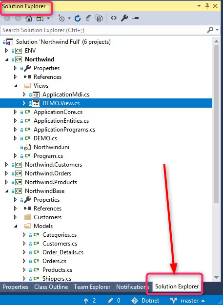

Exercise - Creating a Simple Screen
- First we will add Northwind to Git.
- Click on the bottom right rornner of Visual Studio option Add to Source Control.

- Click and select the option to add to Git.

- After a bit of time the status bar will update and Team Explorer panel will open

- Now your code is in local Git.
- Change back to the Solution Explorer panel.

- Right click on the Northwind project, select Add then select New Folder, name the new folder “Exercises”.
- Right click “Exercises” and select Add then select New Item, an Add new Item screen will open.
- Select from the list to the left Templates, and from the list in the center of the screen select UIController
- In the Name box at the bottom of the screen type in the name ShowProducts.
-
ne the **Products** table at the beginning of the controller class.(drag and drop it, holding the **Shift** key just before the drop). - In the constructor use the From to set the Products to be the class main table.
- Build the Northwind Project. (in the Build pulldown menu, select Build Northwind).
- Using the Class Outline Open the Form Designer:
- Setup the Toolbox if you did not do that early, by right clicking on the form, select "Setup Toolbox".
- Add a grid with the following columns:
- ProductID
- ProductName
- CategoryID
- UnitPrice
- UnitsInStock
- UnitsOnOrder
- Expand the form width to show the entire grid.
- Add a new menu entry to call this screen.
- Save the changes to Git by clicking on the pencil icon in the status bar.
- Build and test.
Previous Next
Help us improve, Edit this page on GitHub
or email us at info@fireflymigration.com